The teardown, inspection and reassembly come from the LEMON 1994 940 base sedan book's "Overhaul - AW70L, AW71 & AW72L" article. That article says it merges Volvo and Isuzu repair data for the same Aisin-Warner unit, edited to drop Isuzu-only steps. The ID plate, fluid, cooler flush and kickdown cable come from the Volvo-sourced B230FD book. AW72L-only specs are left out.
Tap a step to check it off. Progress is saved in this browser only. Book labor: 13.3 h to remove, overhaul and refit, 10.3 h for the overhaul alone. The torque converter is not serviceable; the manual says replace it as a unit.
AW70, AW70L, AW71 or AW71L. One letter on the plate settles it.
The sedan book's application table lists the 1994 940 as AW-71. The same article's stall-test table pairs the B230F with the AW70L and the AW71 with the B230FT turbo. Read your plate before you buy a kit or look up a spring length; four valve-body springs, the pressure-port map and the stall speed differ between AW70L and AW71.
Find the Aisin-Warner product plate on the left-hand side of the transmission.
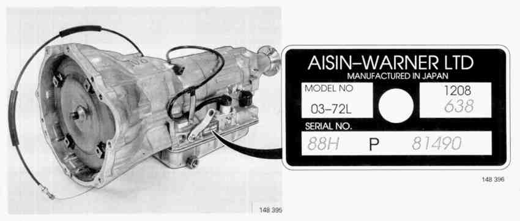
Read the letter in the middle of the serial line. C = AW70, K = AW70L, F = AW71, H = AW71L (P is the AW72L). A model ending in L has a lock-up torque converter.
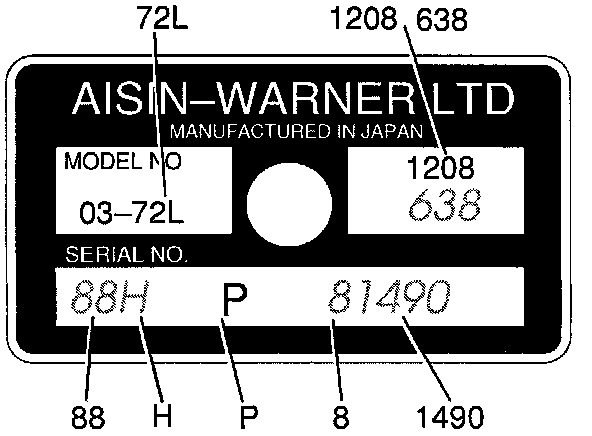
Write the type down. Where a spec below differs by type, it is marked AW70L or AW71.
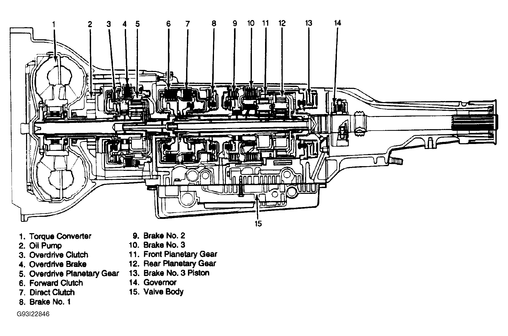
Volvo's own position was to swap in exchange units, not rebuild in the dealer.
The B230FD book lists faults that can be fixed without removing the transmission and that Volvo did not accept as a reason to fit an exchange unit: fluid level, fluid leaks (except from the converter and oil pump), kickdown cable, gear selector mechanism, parking lock, valve bodies, governor, rear extension housing and its seal, the control system, accumulator pistons, the solenoid valve, the oil pressure switch and the lock-up control. Run the stall and line-pressure tests under Specs first; their fault tables point at specific clutches and brakes.
Clean around the filler tube and drain plug, use clean containers and keep the work area free of dust and dirt.
| Tool | Volvo no. |
|---|---|
| Oil pump puller | 5071 |
| Spring compressor, clutch and brake return springs | 5072 |
| Spring compressor, brake No. 3 piston | 5073 |
| Oil pump band, holds the pump halves while torquing | 5077 |
| Guide pins, OD case and oil pump | 5241 |
| Work stand cushioned cylinder | 12 × 7 in |
Also: a shop press, a regulated air supply (14 psi for piston removal, 57–114 psi for function checks), feeler gauges, a dial indicator, a straightedge and vernier calipers, petroleum jelly and new O-rings and seal rings throughout.
Selector in P. Unhook the kickdown cable from the throttle pulley. Disconnect the battery negative cable.
Raise and support the car. Remove the drive shaft.
Drain the fluid. Unscrew the filler tube from the oil pan.
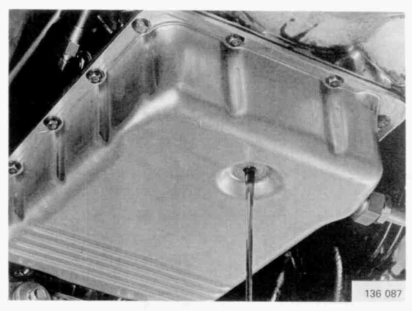
Disconnect the reaction rod and actuator rod from the shift levers. On the AW71, unplug the solenoid lead.
Support the transmission on a jack. Remove the rear crossmember.
Remove the starter bolts and the cover plate. Remove the torque converter-to-flexplate bolts.
Disconnect the oil cooler lines. Remove the transmission-to-engine bolts, slide the unit rearward and lower it out.
With a rubber front flange, disconnect it only from the transmission. Separating it from the drive shaft can cause an imbalance. With a standard non-rubber shaft, replace the 4 bolts and nuts.
Keep every thrust bearing and race with its assembly; they are numbered 1 to 21 and each has one position.
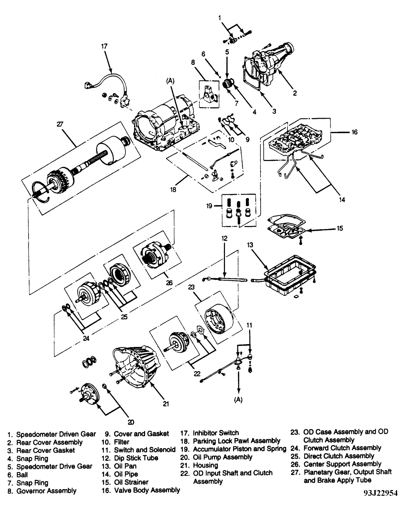
Clean the outside of the case. Remove the extension housing and gasket and the speedometer driven gear.
Remove the torque converter and the overdrive solenoid valve.
Remove the adapter, gasket and governor mounting bolts. Lift the governor retaining ring and slide off the governor and speedometer drive gear. Remove the rear cover and gasket, the governor strainer and the inhibitor switch.
Pan side down, remove the oil pan and gasket. Turn the valve body up and remove the oil pipes and the oil screen.
Remove the 17 valve body bolts. Lift the valve body slowly, unhook the throttle cable from the throttle cam and the manual valve lever pin from the manual valve groove. Push the throttle cable adapter out of the case.
Blow the three accumulator pistons out with compressed air. Keep pistons and springs in order.
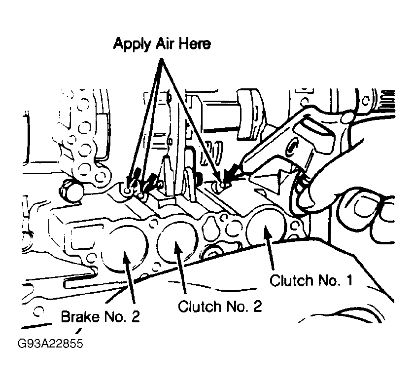
Remove the cam plate and parking pawl spring. Pull the pivot pin and remove the parking pawl. Unhook the parking rod from the manual valve detent lever.
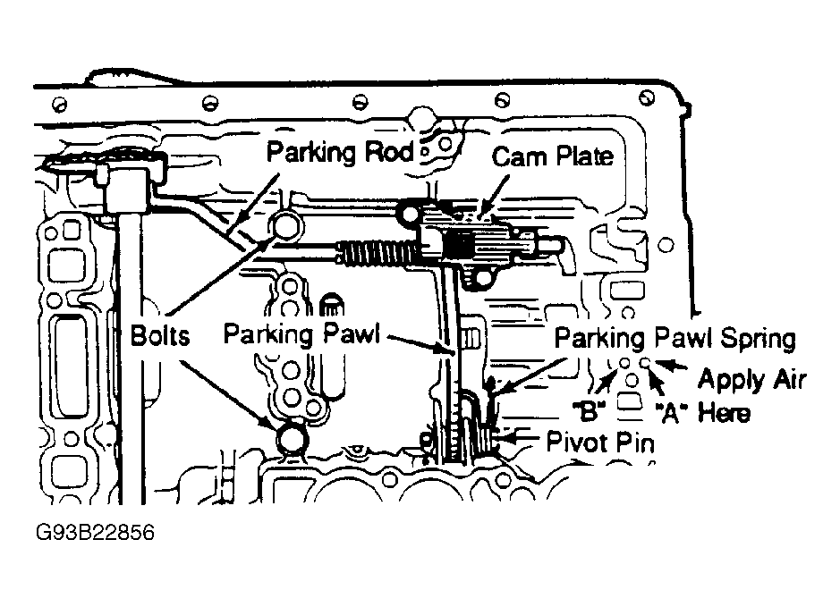
Drive out the spring pin in the manual valve lever; remove the shaft and lever.
Remove the oil pump bolts and pull the pump with puller 5071.
Remove the converter housing bolts. Hold the overdrive input shaft by hand and remove the converter housing.
Remove the OD input shaft, planetary gear and OD clutch as a unit, then the OD case.
Measure the distance from the top of the case flange to the clutch drum and write it down for reassembly. Remove the forward clutch and the direct clutch.
Remove the 2 center support bolts. Remove the center support and sun gear.
Remove the snap ring from the front planetary carrier. Pull the intermediate shaft; remove the carrier and brake No. 3. Remove the output shaft thrust bearing and race from the case.
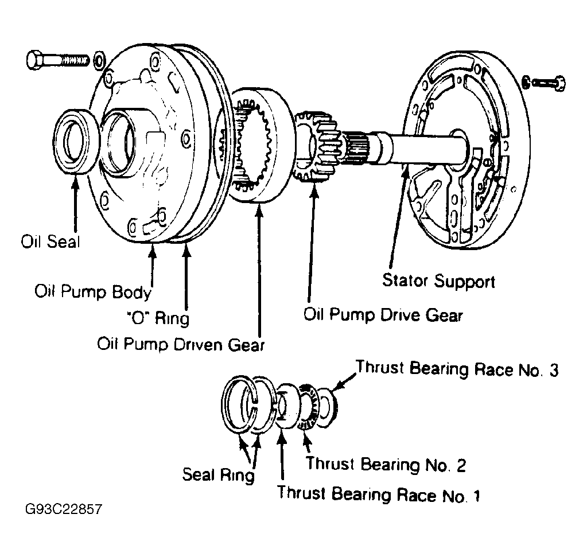
Stand the pump on the torque converter. Remove races No. 1 and 3, bearing No. 2 and the seal rings from the stator support. Remove the stator support bolts and the stator support.
Remove the pump body O-ring. Mark the gear faces, then remove the drive and driven gears.
Body clearance: push the driven gear to one side and feeler it. 0.070–0.150 mm (.0028–.0059 in).
Tip clearance, gears to crescent: 0.110–0.140 mm (.0043–.0055 in).
Side clearance with a straightedge across pump and gears: 0.020–0.050 mm (.0008–.0020 in).
Check the front seal, the stator support face that runs on the pump gear, both bushings, the seal ring grooves and the thrust bearing. The stator support must slide into the converter smoothly without abnormal play; if not, replace the pump assembly.
Reassemble on the converter: gears by their marks, new O-rings, stator support. Clamp with band 5077 and torque the bolts with wave washers to 6.0–9.0 Nm (53–80 in-lb). Remove the band.
Fit the 2 seal rings, races No. 1 and 3 and bearing No. 2 on the stator support.
The disassembly text says 6 stator support bolts; the reassembly text says 8 bolts with wave washers. Count yours on the way apart.
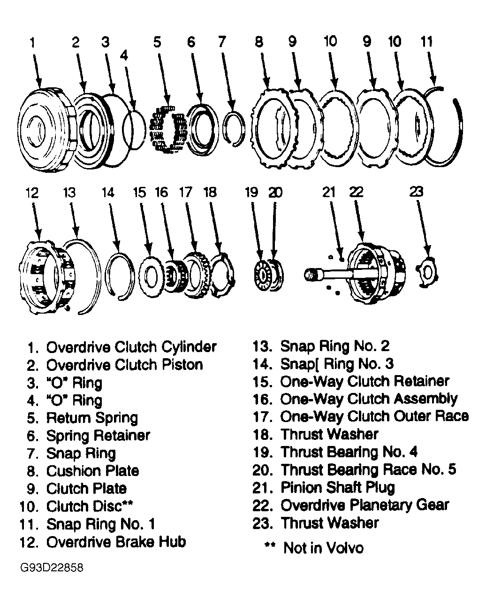
Remove snap ring No. 2 and the OD brake hub. Separate the planetary set from the clutch.
From the planetary: snap ring No. 3, one-way clutch retainer, one-way clutch, outer race, thrust washer, bearing No. 4, race No. 5 and the 4 pinion shaft plugs. Take the thrust washer off the front side.
From the clutch: snap ring No. 1, flange, discs and plates. Compress the springs with 5072 in a press, remove the snap ring, retainer and springs.
Set the clutch cylinder on the oil pump and blow the piston out at 14 psi max. Hold the piston so it doesn't fly out.
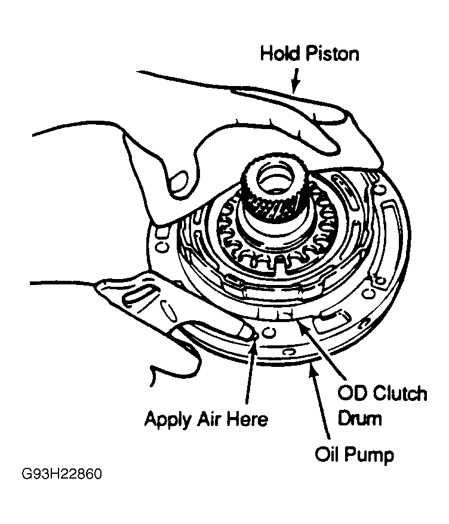
Inspect splines, discs, plates, bearing seats, bearings, teeth and hubs. Replace any disc under 2.10 mm (.083 in).
New O-rings inside and outside the piston, coat with ATF, fit piston, springs and retainer. Compress with 5072, fit the snap ring, confirm the piston moves.
Plates and discs in, then snap ring No. 1 (the narrower ring). Snap ring-to-retainer plate clearance: 0.30–0.90 mm (.012–.035 in).
Planetary: pinion shaft plugs, race No. 5, bearing No. 4 and the thrust washer with its oil groove facing forward. One-way clutch into its outer race, into the planetary, then retainer and snap ring.
Set the planetary on the clutch. Holding the cylinder, the input shaft must turn freely clockwise and lock counterclockwise.
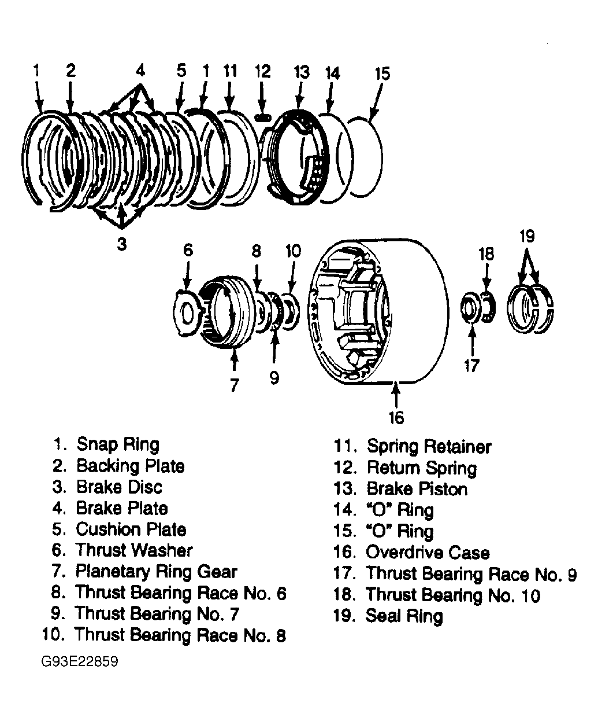
Remove the snap ring, backing plate, disc, plates, cushion plate, thrust washer, planetary ring gear, bearing No. 7 and races No. 6 and 8 from the OD case.
Remove the snap ring, spring retainer and return spring. Blow the piston out of the OD case; remove its O-ring. Remove 2 seal rings, bearing No. 10 and race No. 9.
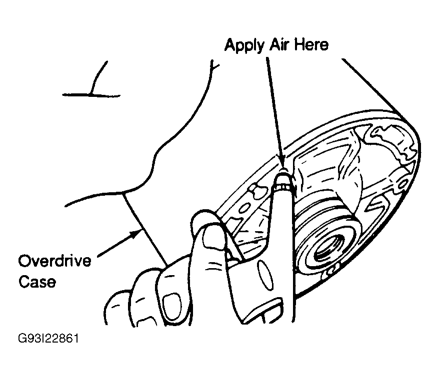
Inspect. Replace any brake disc 2.10 mm (.083 in) or thinner.
Race No. 9, bearing No. 10 and 2 seal rings on the case. New O-rings in both piston grooves, ATF, piston in. Return spring, retainer and snap ring; springs seated and snap ring fully home.
Races No. 6 and 8 with bearing No. 7, then ring gear and thrust washer. Concave cushion plate, alternating plates and discs, backing plate, snap ring.
Feeler the backing plate-to-snap ring gap: 0.35–1.60 mm. Too big: replace disc or plates. Too small: check the assembly order.
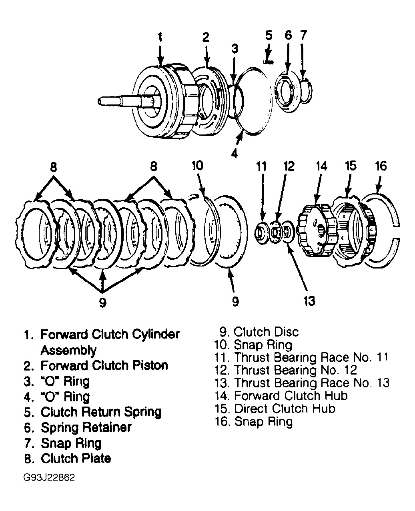
Stand it on the extension housing. Remove the snap ring, the direct clutch hub, forward clutch hub and disc, bearing No. 12 and races No. 11 and 13.
Remove the snap ring, plates and discs. Compress with 5072, remove the snap ring, retainer and springs. Set the cylinder on the OD case and blow out the piston. Remove its O-ring.
Inspect. The manual says Volvo does not measure spring free length here. Replace any disc under 2.10 mm.
New O-rings, ATF, piston in, springs and retainer. Compress with 5072, snap ring on, confirm the piston moves.
Petroleum jelly on races No. 11 and 13 and bearing No. 12; fit them on the rear of the input shaft. Forward clutch hub in.
Alternate plates and discs, then the narrow snap ring. One more disc, the direct clutch hub and the wide snap ring.
Set it on the OD case and put 57–114 psi into the passage. The clutch should apply and hold without leaking.
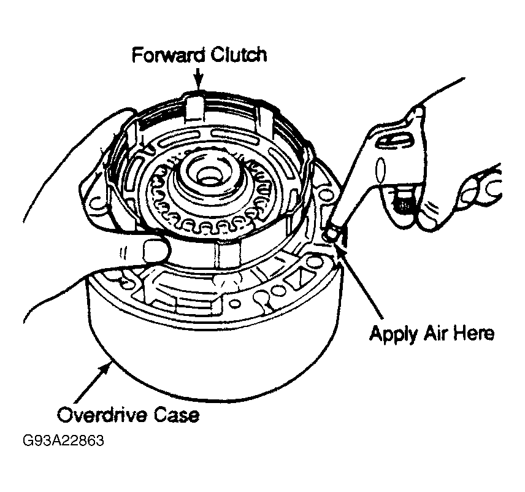
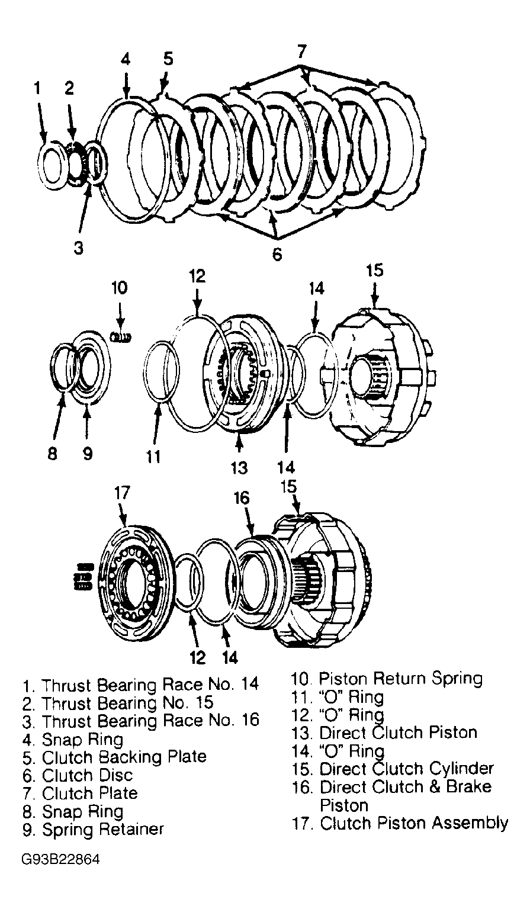
Remove races No. 14 and 16 and bearing No. 15. Remove the snap ring, backing plate, discs and plates.
Compress with 5072, remove the snap ring, retainer and spring. Set the cylinder on the center support and blow the piston out. Remove the O-rings.
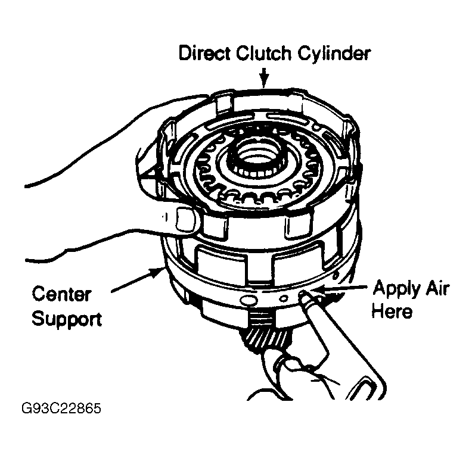
Inspect. Minimum disc thickness 2.10 mm (.083 in).
New O-rings, ATF, piston in. Springs and retainer under 5072, snap ring.
Discs, plates and backing plate with its machined ridge facing out. Snap ring. Races No. 14 and 16 and bearing No. 15.
Snap ring-to-backing plate clearance: 0.30–1.20 mm (.012–.048 in).
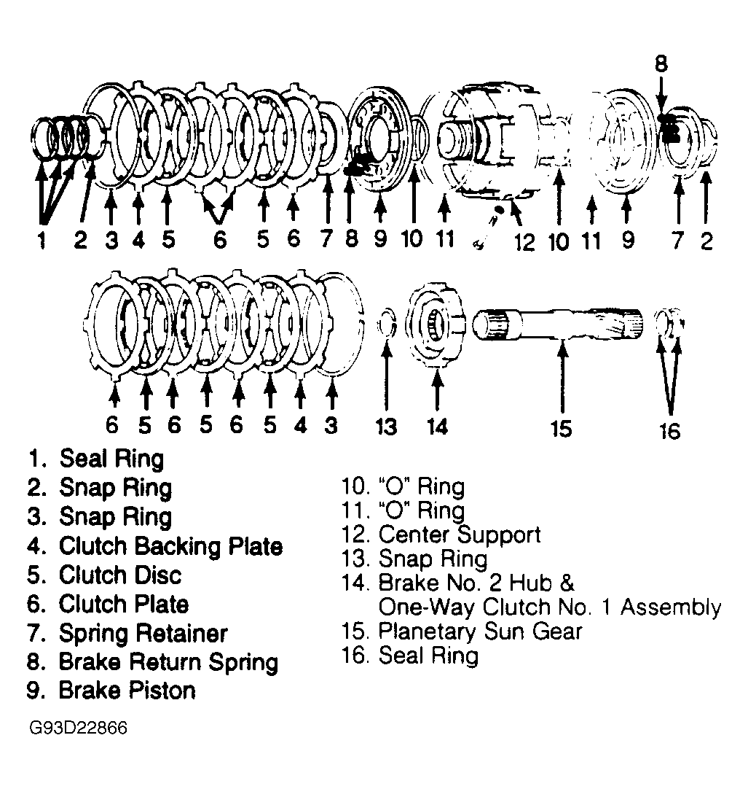
Remove the snap ring from the front of the sun gear and lift out the sun gear with its one-way clutch.
For each brake: snap ring, backing plate, discs and plates out. Compress with 5072, remove the snap ring, retainer and 12 return springs.
Blow each piston out at 14 psi max, using the port for that brake. Remove O-rings and seal rings.
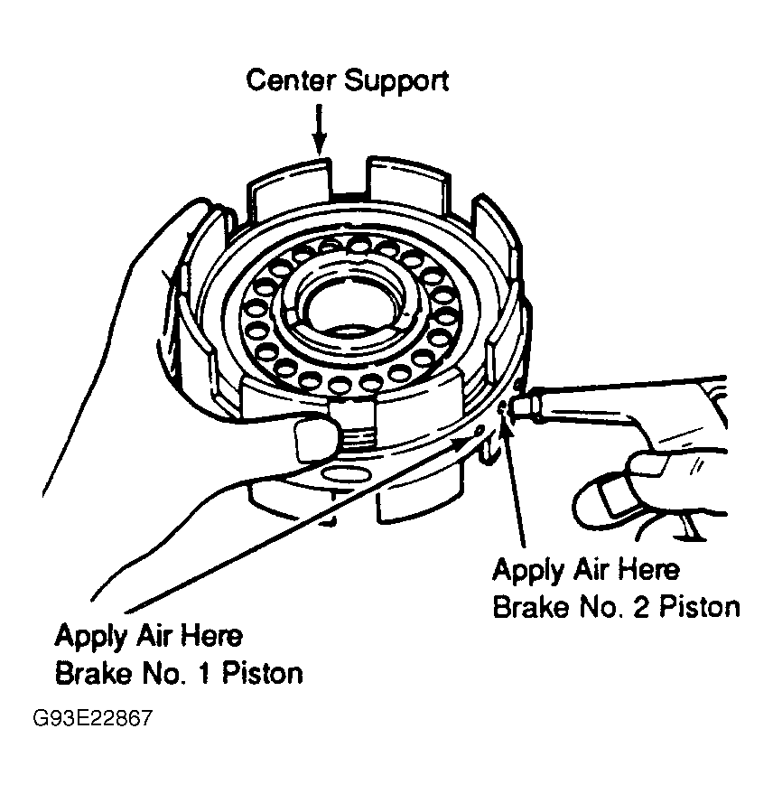
Inspect. Minimum disc thickness 2.10 mm for both brakes.
Sun gear: it must turn clockwise and lock counterclockwise. If the one-way clutch is faulty, replace the brake No. 2 hub and one-way clutch assembly.
Rebuild each brake: 3 seal rings on the support, new piston O-rings with ATF, piston in, 12 springs, retainer, compress with 5072, snap ring. Plates, disc, backing plate, snap ring.
Brake No. 1 snap ring-to-backing plate clearance: 0.30–1.20 mm. Brake No. 2: the procedure mounts a dial indicator on the piston and applies 57–114 psi to measure travel; the brake No. 2 table lists snap ring-to-backing plate clearance of 0.30–1.20 mm.
2 seal rings in the sun gear grooves. Fit the sun gear into one-way clutch No. 1 and check rotation.
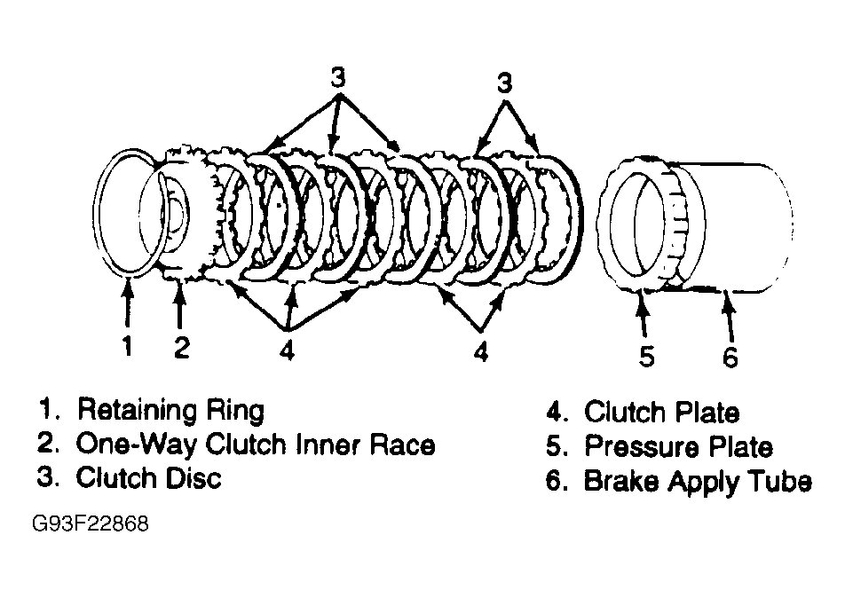
Comes apart during the main teardown: retaining ring, one-way clutch inner race, discs, plates, pressure plate and apply tube off the intermediate shaft. Note the order.
Minimum plate thickness 2.10 mm. It goes back together during final assembly.
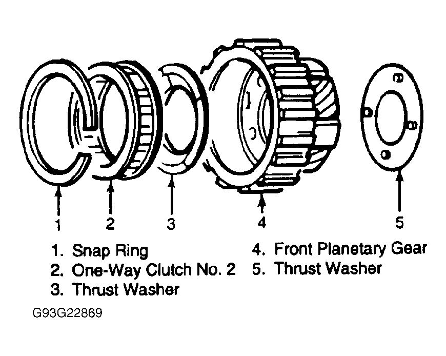
Separate the inner race from the front carrier. Remove the steel thrust washer, the snap ring, one-way clutch No. 2 and the nylon thrust washer.
Inner race on the carrier: the carrier must turn counterclockwise and lock clockwise.
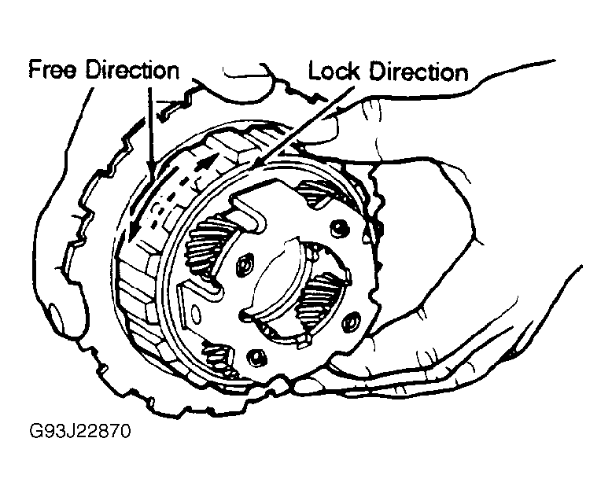
Reassemble: nylon washer on the planetary, 2 end bearings on the one-way clutch, clutch into the planetary, snap ring. Steel thrust washer on with petroleum jelly.
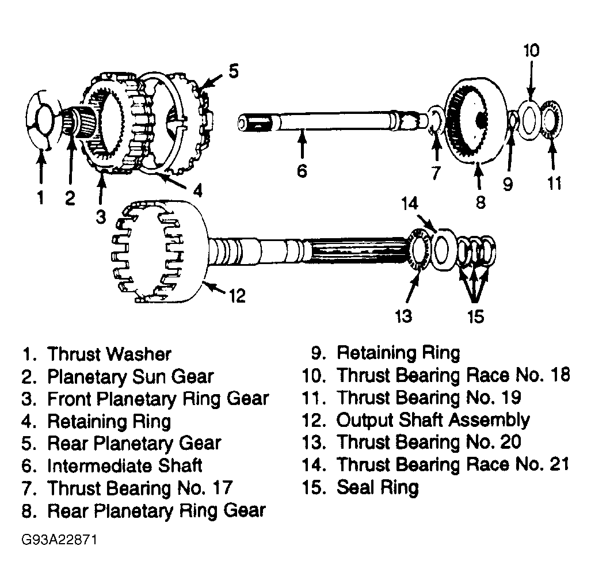
Compress the snap ring and remove the front planetary ring gear. Pull the intermediate shaft out of the output shaft. Remove bearing No. 19 and race No. 18, then race No. 21, bearing No. 20 and the 3 seal rings from the output shaft.
Remove the thrust washer and sun gear, the rear planetary and bearing No. 17. Flip the intermediate shaft; remove the retaining ring and rear ring gear.
Inspect splines, bearing seats, bearings, teeth and hubs. Check the oil passages for clogging.
Reassemble in reverse: ring gear and retaining ring on the shaft; bearing No. 17, rear planetary, sun gear, thrust washer. 3 seals, bearing No. 20 and race No. 21 into the output shaft. On the extension housing as a stand, bearing No. 19, race No. 18 and the intermediate shaft into the output shaft. Front ring gear on the output flange with its retaining ring compressed.
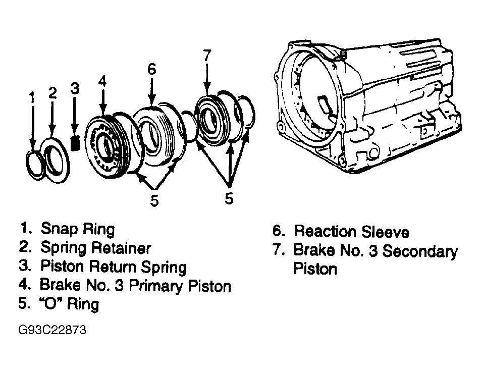
Compress the springs with 5073 and remove the snap ring. Remove the retainer and 16 return springs.
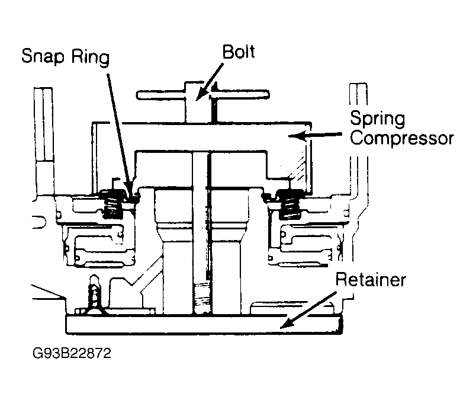
Case front end down on a rag. Finger over port B, 14 psi (97 kPa) into port A. The inner and outer pistons and the reaction sleeve come out. Ports A and B are shown in the parking pawl figure.
Separate the primary and secondary pistons from the sleeve; remove the O-rings. Inspect.
New O-rings on both pistons and the sleeve, ATF, pistons into the sleeve, assembly into the case. 16 springs on with petroleum jelly, retainer, compress with 5073, snap ring.
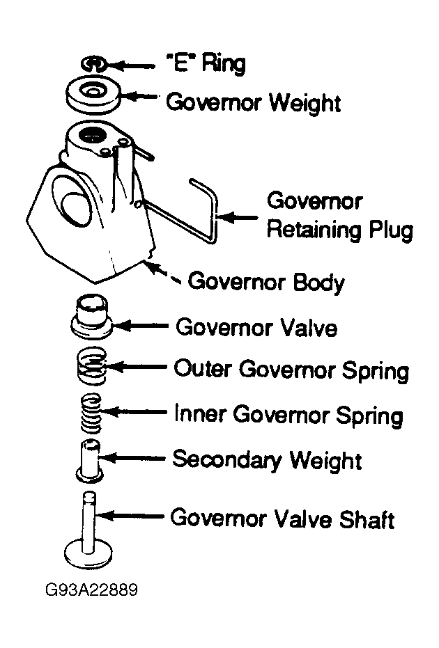
Remove the E-ring, weight, shaft, secondary weight and springs; take the valve out of its bore. Remove the retaining ring.
Check the valve and body for wear and the springs. Governor valve spring free length 20.63 mm.
Reassemble: retaining ring, secondary weight and springs on the shaft, valve into the body, spring and shaft through the valve, weight on. Compress with needle-nose pliers and fit the E-ring fully in its groove. The valve must move smoothly.
Three sections: upper front, upper rear and lower. Work over a tray; the check balls are loose.
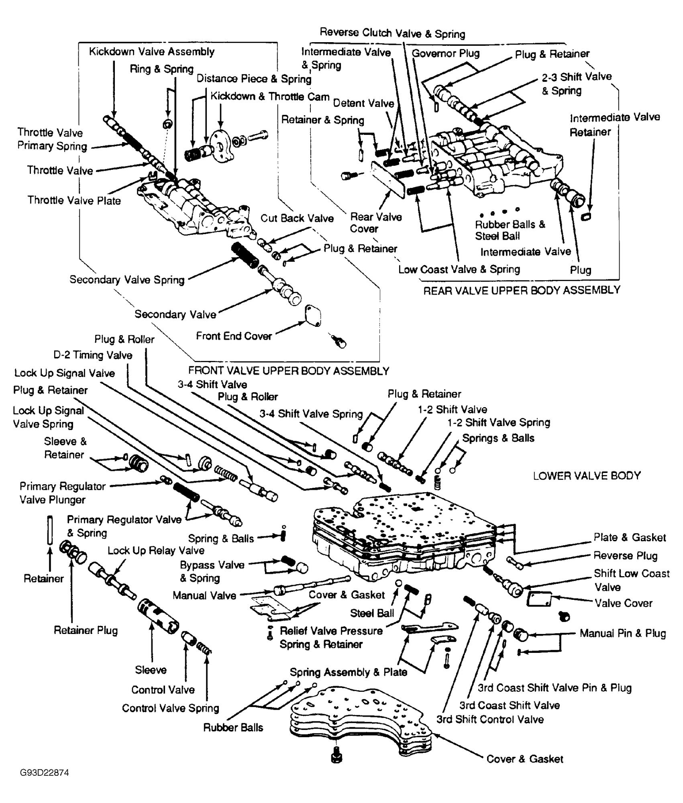
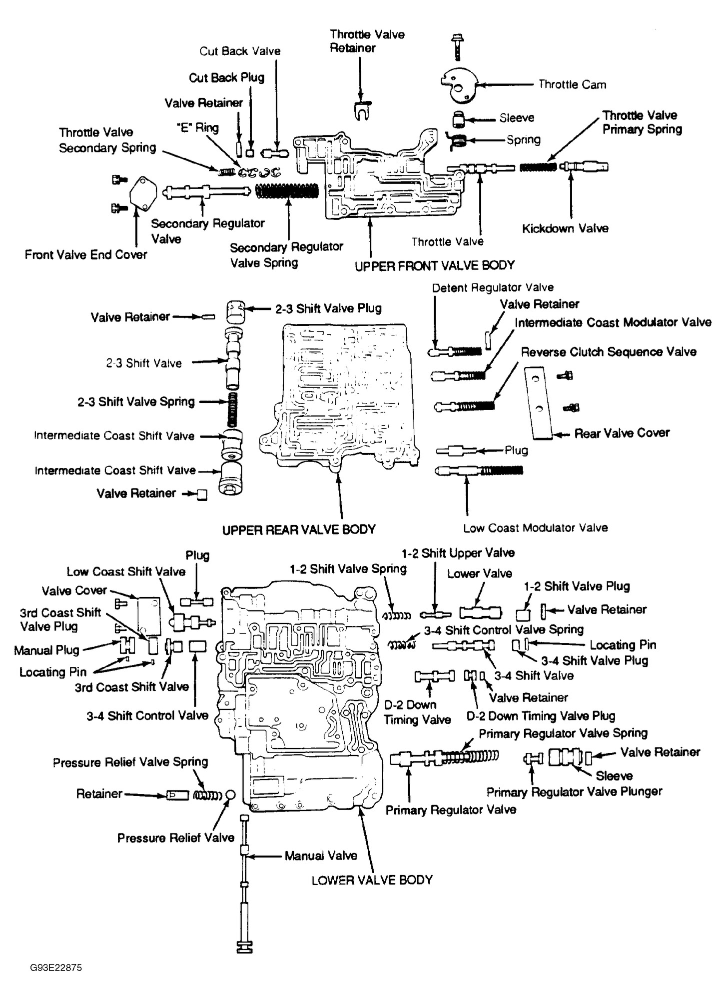
Remove the detent spring plate, detent spring and manual valve, then the plate from the lower body. Turn it over and remove the 10 bolts from the upper front and upper rear bodies.
Turn it back and remove the lower body bolts. Lift the lower body and plate as a unit so the check valve and balls don't drop.
Remove the valve retainer, cut-back plug and cut-back valve.
Remove one front end cover bolt, loosen the other and rotate the cover slowly until the secondary regulator valve shows. Hold the cover; the valve is heavily spring loaded. Remove valve, spring, bolt and cover.
Turning the throttle cam, push the kickdown valve in and insert the cut-back valve retainer to hold the throttle valve. Remove the throttle cam spring, cam and sleeve.
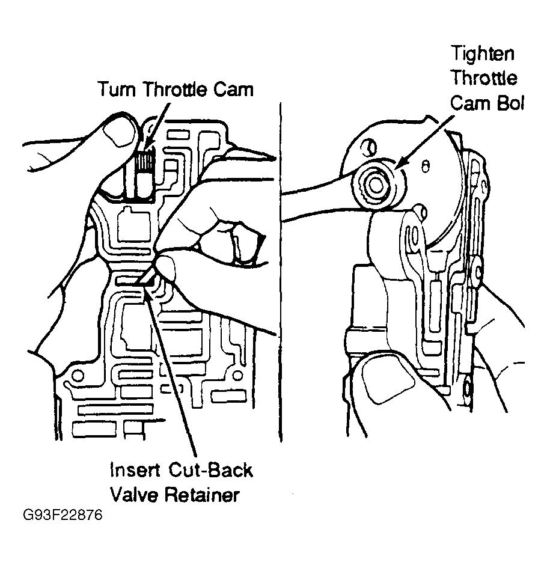
Remove the retainer, kickdown valve and primary spring, then the key plate, 4 E-rings, secondary spring and throttle valve. Remove the check ball.
Inspect valves, bores and passages. Spring free lengths, AW70L & AW71: secondary regulator (green) 71.27 mm, throttle valve (no color) 43.00 mm. Replace any spring shorter than spec.
Reassemble: secondary regulator spring, valve and end cover. Throttle valve, secondary spring, 4 rings and key plate. Primary spring and kickdown valve. Push the kickdown valve, hold with the cut-back retainer, hook the spring into the cam hole, fit sleeve and cam. The cam must turn through its full stroke smoothly. Remove the retainer. Cut-back valve, plug and retainer. Rubber check ball.
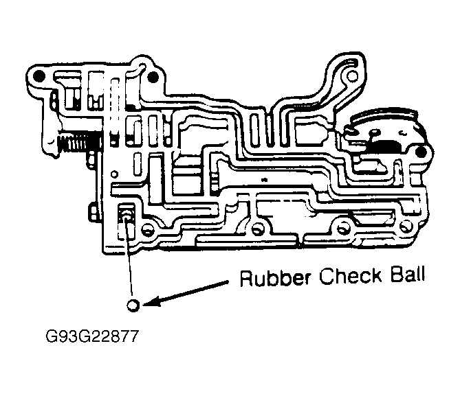
Tweeze out the check balls. Remove the intermediate coast shift valve retainer, plug, valve and spring, then the 2-3 shift valve retainer, plug and valve.
Remove the rear cover bolt nearest the low coast modulator valve and rotate the cover to release that valve and spring. Rotate further for the plug, reverse clutch sequence valve and spring. Remove the cover, spring and intermediate modulator valve, then the detent regulator valve retainer, spring and valve.
Reassemble: detent regulator valve and spring, compress with a large screwdriver, slip the retainer over the spring end so it fully covers it. Intermediate coast modulator valve and spring. Rear cover on one bolt, on the side nearer the intermediate coast modulator. Reverse clutch sequence valve, spring, plug. Low coast modulator valve and spring. Second bolt; tighten both.
2-3 shift valve, plug, retainer. 2-3 spring, intermediate coast shift valve, plug, retainer. 1 steel and 3 rubber check balls.
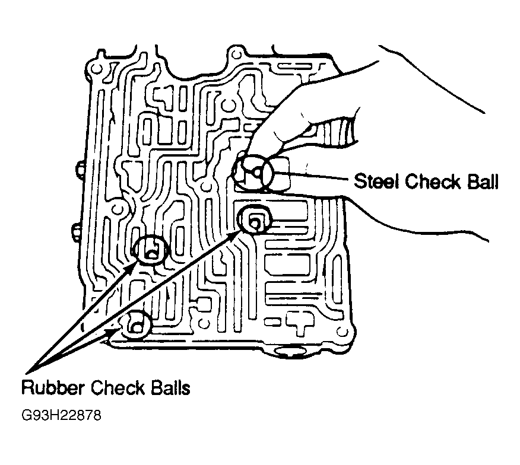
Remove the lower plate and gaskets, check balls, damping check valve spring, cooler by-pass valve and spring. Turn it over; remove the set bolt, cover, plate and gaskets.
Remove 4 check balls and keep them together. Remove the pressure relief valve retainer, spring and valve, then the plate and gasket.
Valve retainer side down, press the primary regulator sleeve and remove retainer, sleeve, plunger, spring and primary regulator valve.
Remove the D-2 downshift timing valve retainer, plug and valve; the 3-4 shift valve locating pin, plug, valve and spring; the 1-2 shift valve retainer, plug and lower valve.
Remove the low coast shift valve cover, then its plug and valve, the manual plug, locating pin, 3rd coast shift valve plug, pin, 3rd coast shift valve and 3-4 shift control valve.
Reassemble: low coast shift valve small end first, cover. 3-4 shift control valve cup side first, 3rd coast shift valve small end first, its plug thicker face first, pins and outer plug, low coast cover.
On edge: 1-2 spring, upper valve, lower valve, plug, retainer. 3-4 spring, 3-4 valve small end first, plug, pin. D-2 timing valve small end first, its plug larger end first, retainer.
Primary regulator valve larger end first with its spring; the valve sits flush with the body. Plunger rounded end first into the sleeve, recessed inside it. Sleeve, plunger and retainer in.
Pressure relief valve, spring, retainer. 4 check balls in the bottom of the body.
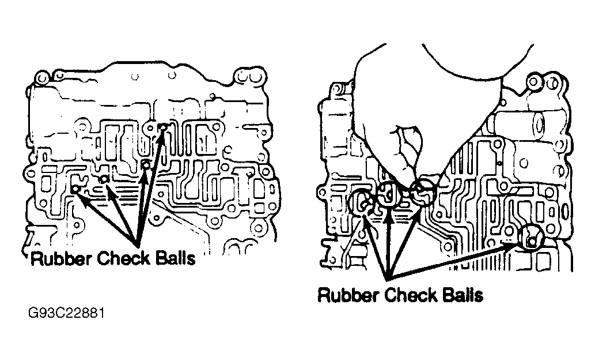
Cover upper gasket, cover plate and cover lower gasket (the one with oval holes for the balls) onto the cover; cover onto the body; set bolts.
Top of the body: check balls, damping check ball and spring, cooler by-pass valve and spring.
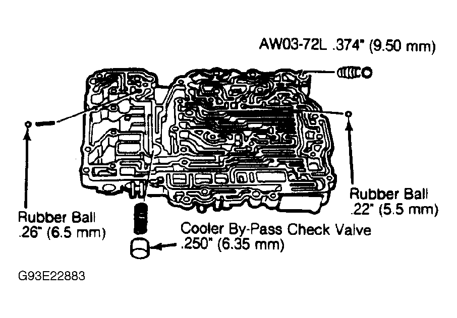
| Spring | Free, mm |
|---|---|
| Detent regulator orange | 31.39 |
| Intermediate modulator AW70L no color / AW71 red | 25.60 / 35.43 |
| Low coast modulator | 42.34 |
| Reverse clutch sequence AW70L yellow / AW71 red | 33.71 / 37.54 |
| 2-3 shift white | 35.10 |
| Check valve yellow | 33.32 |
| Oil cooler by-pass orange | 28.91 |
| Lock-up relay white, L units | 18.49 |
| Lock-up signal white, L units | 45.31 |
| Pressure relief | 32.13 |
| Primary regulator AW70L white / AW71 no color | 61.19 / 73.30 |
| Primary regulator damping | 19.99 |
| 1-2 shift | 34.62 |
| 3-4 shift AW70L / AW71 | 37.88 / 33.65 |
Replace any spring shorter than its free length, or with rust or collapsed coils.
These figures identify each bolt by its length in mm. Put each bolt back in its own hole.
Lower body gasket on the lower body, separator plate on the gasket, and 2 temporary bolts to hold the plate against the spring-loaded check valve. Gasket on the upper rear body.
Lower body onto the upper rear with the right edges aligned. 3 bolts from the lower side to 4.9–5.8 Nm (43–51 in-lb).
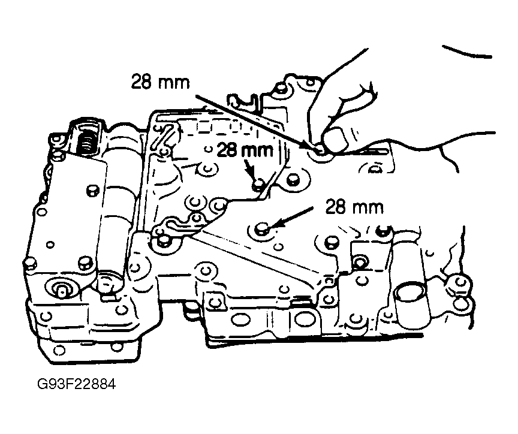
Turn it over; 5 bolts in the upper rear body to 4.9–5.8 Nm. Remove the 2 temporary bolts.
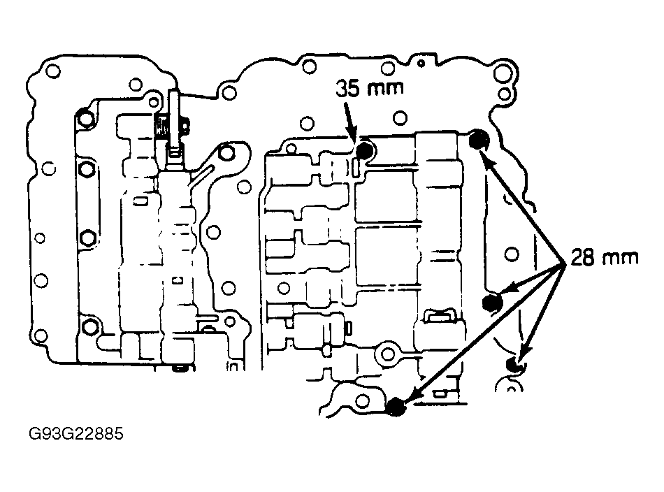
Lower-and-rear assembly onto the upper front body; bolts from the lower side to 5.4 Nm (48 in-lb).
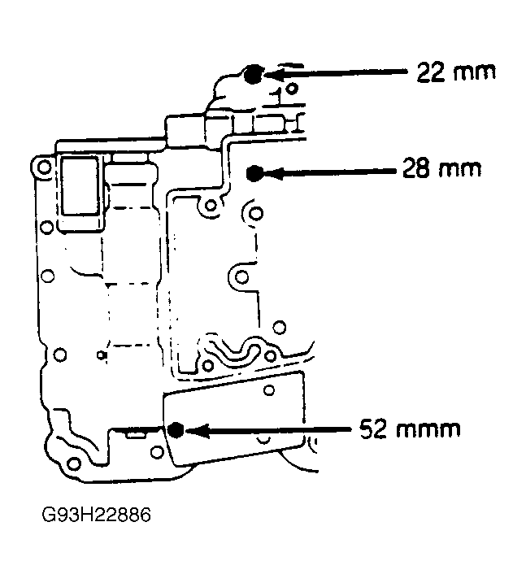
Turn it over; 5 bolts in the upper front body.
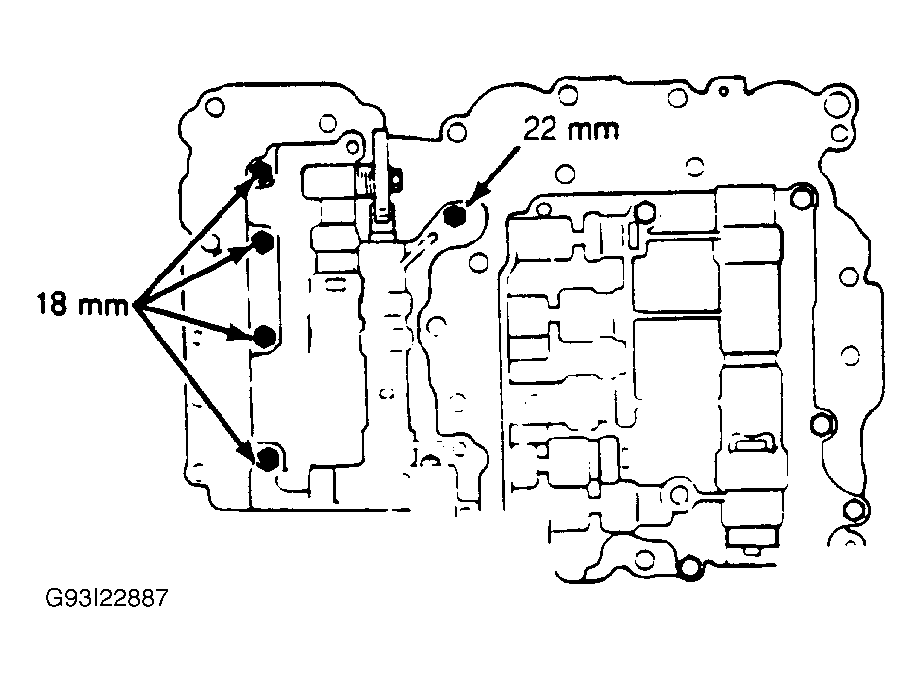
Plate on the lower body. Manual valve, detent spring and detent spring plate.
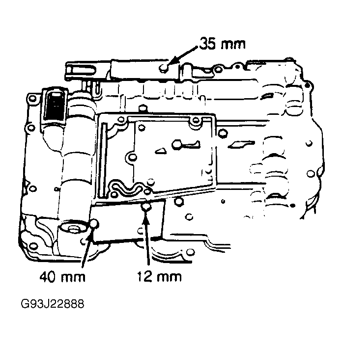
Soak new clutch and brake discs in ATF for at least 2 hours before assembly.
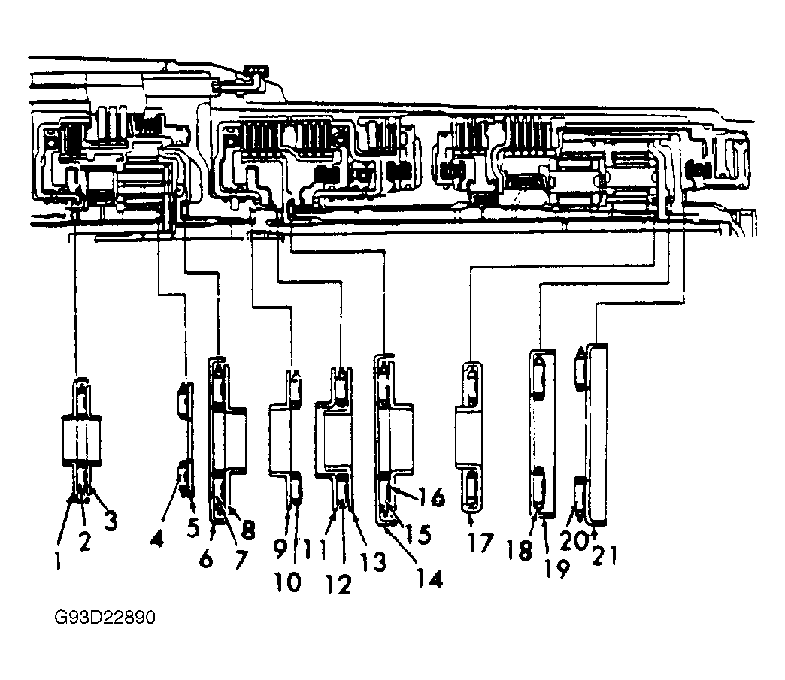
Case on the cushioned 12 × 7 in cylinder. Race No. 21 and bearing No. 20 into the case.
Brake apply tube in; the pawl at the end of the tube goes inside the piston.
Thrust washer on the planetary carrier with its pawl in the carrier notch. Lower the rear planetary and output shaft in without hitting the bearing.
Pressure plate in. Thrust washer on the front carrier with petroleum jelly. One-way clutch No. 2 and front planetary into the ring gear.
Brake No. 3 discs and plates, alternating. Sun gear into the one-way clutch inner race, assembly into the case, inner race aligned with the case mark. Hold the race and remove the sun gear.
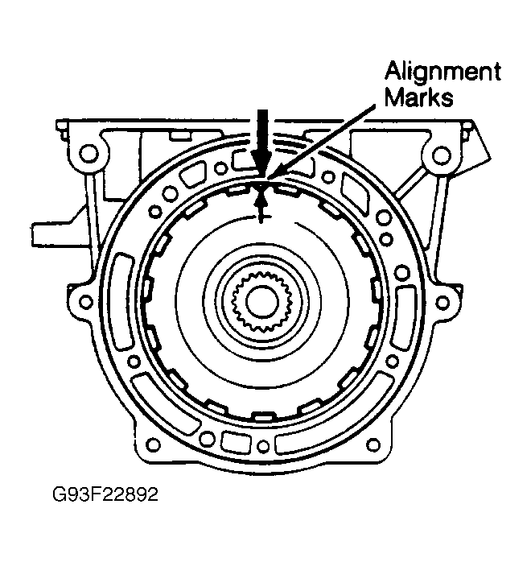
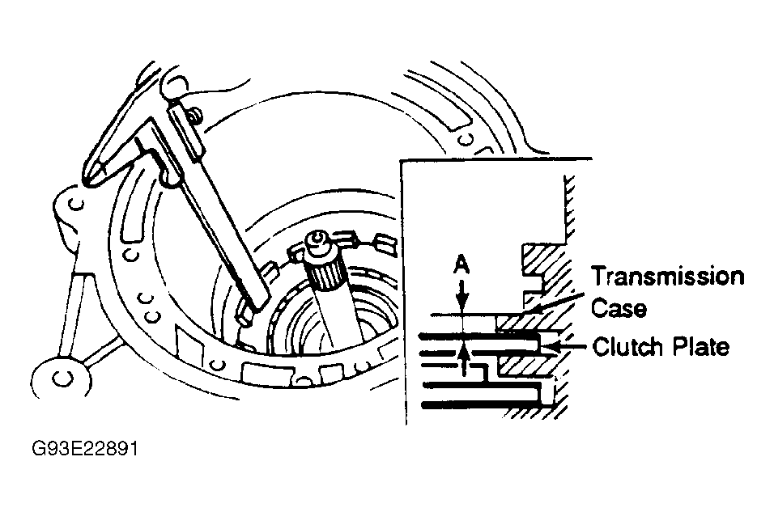
Sun gear into the center support, snap ring. Center support into the case with its oil hole and bolt hole lined up with the case.
Push the support rearward. Tighten the 2 bolts alternately: 7 Nm, 14 Nm, 20 Nm, then 24–27 Nm (18–20 ft-lb). Start with the bolt nearest the accumulator bores.
Direct clutch in, fully meshed with the center support. Its hub should sit flush with or slightly below the sun gear shaft.
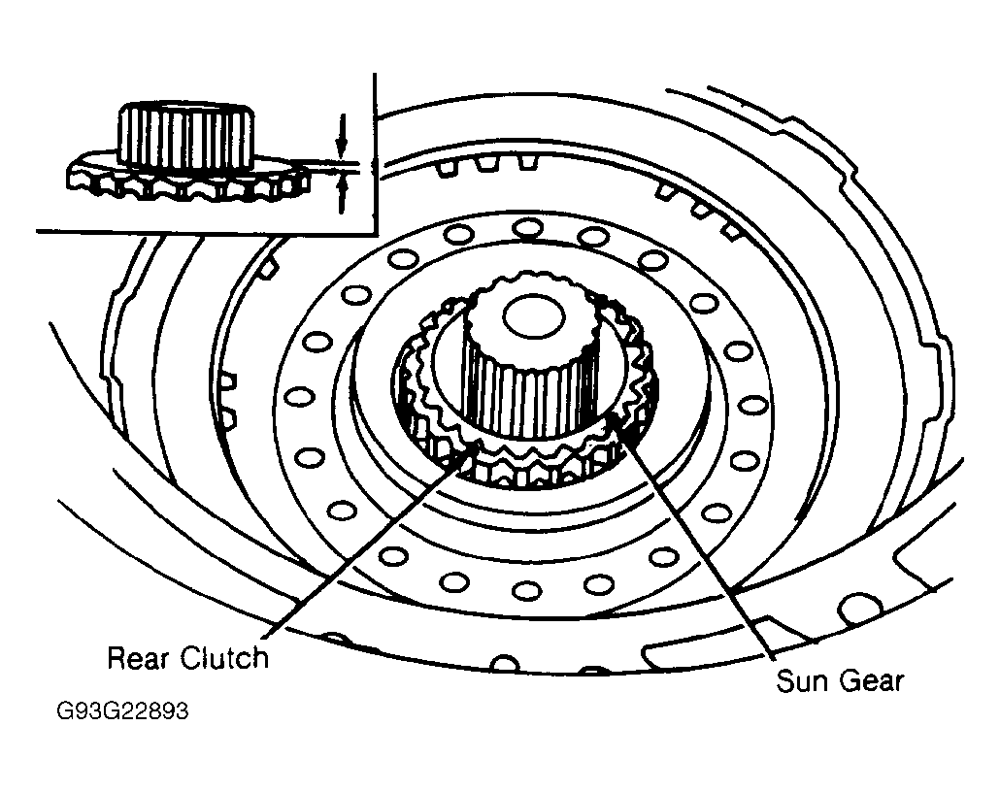
Race No. 16 over the direct clutch spline with petroleum jelly. Bearing No. 15 and race No. 14 on the forward clutch.
Forward clutch in, fully seated. Measure its depth from the case with a straightedge and calipers and compare to the number you wrote down at teardown. The article says Volvo publishes no depth spec.
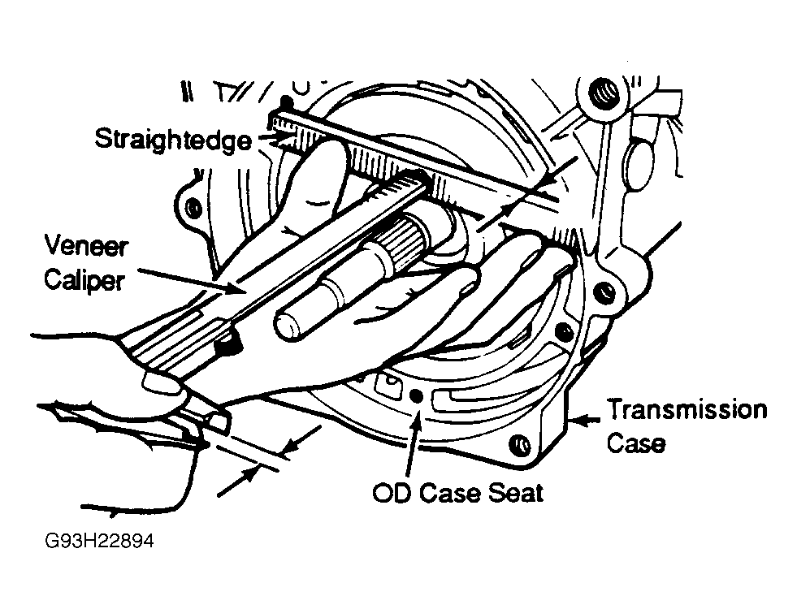
Bearing No. 10 on the forward clutch and race No. 9 on the OD case end, both with petroleum jelly. Guide pins 5241 into the case.
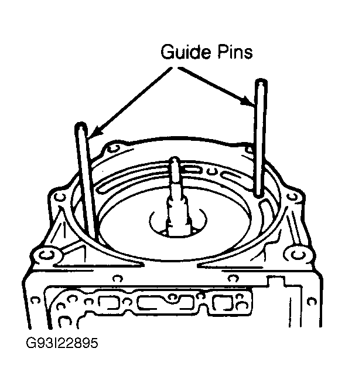
OD case in over the pins with the index notch down. Thrust race on the OD planetary.
Thrust washer on the rear of the OD carrier with petroleum jelly. OD clutch and planetary in, fully seated. Installed height, straightedge and calipers: 3.50 mm (.138 in).
O-rings on the OD case and converter housing. Converter housing bolts: 10 mm 27–41 Nm (20–30 ft-lb), 12 mm 47–66 Nm (35–49 ft-lb).
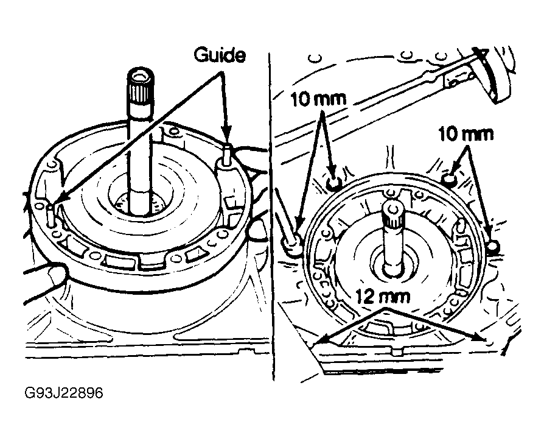
Race No. 3 on with petroleum jelly, then the OD input shaft. Bearing No. 2 and race No. 1 on the oil pump.
Pump in over the guides. Sealant on 5 bolts, tighten evenly, remove the guides, then the last 2 bolts with sealant. Pump bolts 18–24 Nm (13–18 ft-lb).
Air-check every clutch and brake through its port and listen for the piston. No movement means take it back apart. Use the port map that matches your plate.
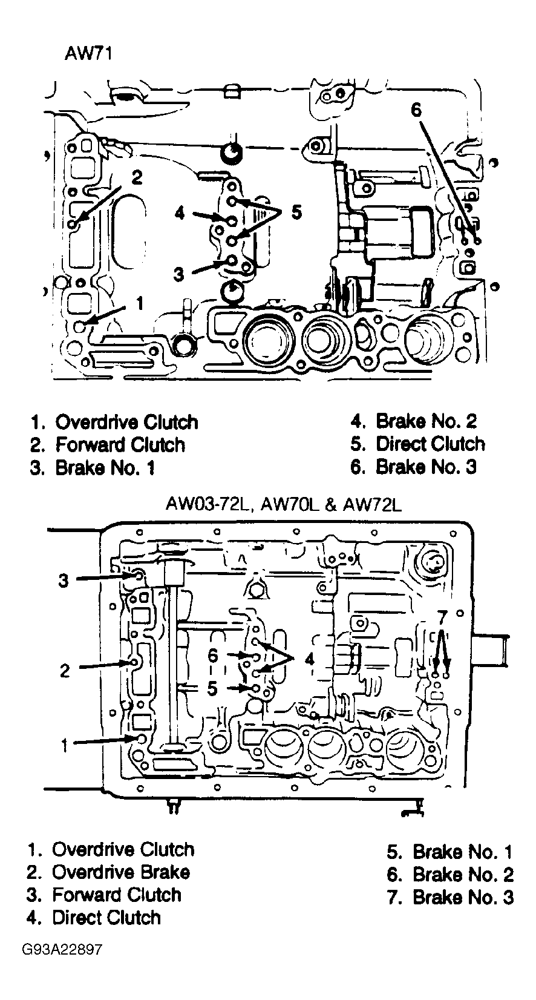
Parking rod onto the manual valve lever; nut 13.6–17.6 Nm (10–13 ft-lb). Lever shaft into the case; spring pin with its slot at right angles to the shaft.
Parking pawl, pivot pin and spring. Cam plate with 2 bolts; the parking rod must protrude from the cam plate.
Throttle cable into the case without cutting its O-ring. Accumulator pistons and springs in from the front side, each in its own bore (table under Specs).
Throttle cable onto the throttle cam. 2 or 3 valve body bolts loosely, manual valve lever pin into the manual valve groove, then all 17 bolts to 8.1–12.2 Nm (72–108 in-lb).
Oil screen, 4.9–5.8 Nm. Shift to L and P to seat the detent roller. Oil pipe.
Magnet in the pan. Pan and gasket, bolts evenly to 3.9–4.9 Nm (35–43 in-lb). Drain plug 18–23 Nm (13–17 ft-lb).
Governor strainer, rear cover and gasket. Governor and speedometer drive gear onto the output shaft; E-ring locked.
Adapter and gasket. OD solenoid. Speedometer driven gear, extension housing and gasket.
Torque converter in. Distance A from the housing face to the converter: 16.2–19.6 mm (.64–.77 in).
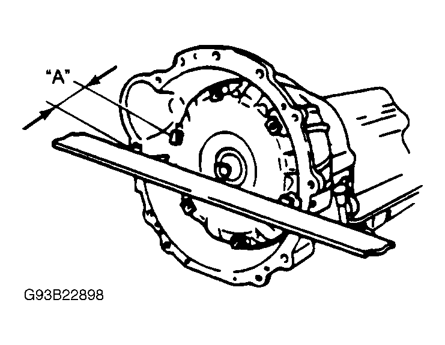
Install in reverse of removal. Converter-to-flexplate bolts in a crisscross to 45 Nm (33 ft-lb). Lower filler tube nut 88 Nm (65 ft-lb).
Drive shaft flange: rubber flange 70–88 Nm (52–65 ft-lb). Standard flange with new bolts: 8 mm 35 Nm, 10 mm 50 Nm.
Kickdown cable: pull the cable out until you feel slight resistance and hold it there; crimp the clip 0.25–1.0 mm (.01–.04 in) from the sheath end. Then set the sheath so the clip pulls out 50.3–52.6 mm (1.98–2.07 in) at full throttle.
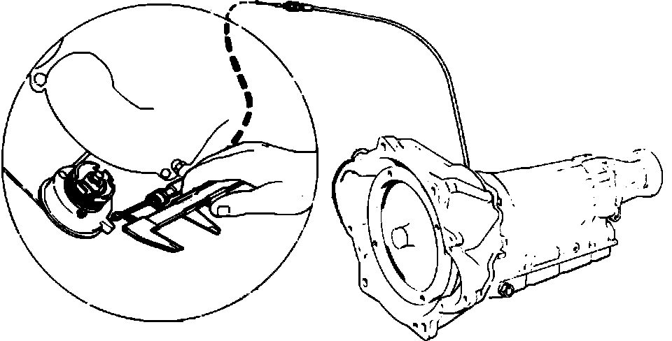
Adjust the gearshift linkage.
Flush the cooler before any road test; the Volvo book warns that skipping it can damage the transmission. Container under the rear (return) cooler pipe, disconnect it, overfill the transmission by about 0.3 L, idle until clean fluid comes out, stop, reconnect.
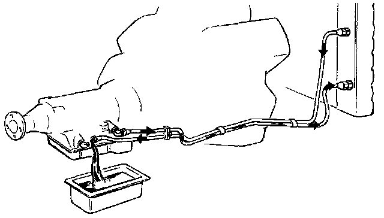
If the car has an extra oil cooler, disconnect it from the main cooler and pump clean fluid through it with a filler pump, then reconnect and check for leaks.
Fill with Dexron-II ATF. Volvo's check: handbrake on, idle, run the selector through every position, then P, wait 2 minutes, read the dipstick and top up. A dry unit and converter hold up to 7.5 L, about 2.5 L of it in the converter.
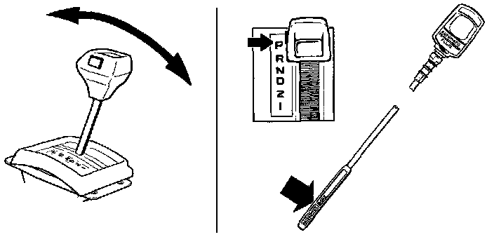
Stall test and line pressure test before driving it hard. Specs and fault tables are below.
| Item | Spec |
|---|---|
| Clutch or brake disc, minimum all packs | 2.10 mm |
| Brake No. 1 clearance | 0.30–1.20 mm |
| Brake No. 2 clearance | 0.30–1.20 mm |
| Overdrive brake clearance | 0.35–1.60 mm |
| Overdrive clutch clearance | 0.30–0.90 mm |
| Direct (rear) clutch clearance | 0.30–1.20 mm |
| Input shaft end play | 0.30–0.90 mm |
| Output shaft end play | 0.30–0.90 mm |
| Oil pump body clearance | 0.070–0.150 mm |
| Oil pump tip clearance | 0.110–0.140 mm |
| Oil pump side clearance | 0.020–0.050 mm |
| OD clutch installed height | 3.50 mm |
| Converter installation distance | 16.2–19.6 mm |
| Piston circuit | OD / length |
|---|---|
| No. 1 B2 | 34.8 / 48.5 mm |
| No. 2 C2 | 31.8 / 45.0 mm |
| No. 3 C1 | 31.8 / 49.5 mm |
The book prints No. 1's length as 1.109 in beside 48.5 mm; those don't match (48.5 mm is 1.909 in). No. 1 is the only 34.8 mm piston, so sort it by diameter.
| Fastener | Nm |
|---|---|
| Center support bolts 7, 14, 20, then final; accumulator-side bolt first | 24–27 |
| Converter housing, 10 mm | 27–41 |
| Converter housing, 12 mm | 47–66 |
| Oil pump to case | 18–24 |
| Stator support to pump body | 6.0–9.0 |
| Valve body to case, 17 bolts | 8.1–12.2 |
| Valve body section bolts | 4.9–5.8 |
| Oil screen | 4.9–5.8 |
| Oil pan | 3.9–4.9 |
| Drain plug | 18–23 |
| Parking rod nut | 13.6–17.6 |
| Parking pawl bracket table only | 7.0 |
| Throttle cam bolt table only | 8.0 |
| Governor bolt table only | 4.0 |
| Detent lever, end cover, end plate, large cover table only | 6.0 |
| Filter cover plate table only | 8.0 |
| Rear cover table only | 35 |
| Companion flange bolt table only | 45 |
| Converter to flexplate | 45 |
| Lower filler tube nut | 88 |
Ranges are from the procedure text. The article's torque table gives single values that fall inside those ranges, except the oil pan (table 5.0 Nm) and the valve body section bolts (table 6.0 Nm), both slightly above the text range.
| Engine | D, kPa | R, kPa |
|---|---|---|
| Idle | 469–55066–78 psi | 713–836101–119 psi |
| Stall | 1020–1223145–174 psi | 1529–1937218–276 psi |
With the white primary regulator spring, D at idle should read 469 kPa (68 psi). The test is written for a chassis dynamometer. If pressure is off, adjust the kickdown (throttle) cable and retest. High in D and R: regulator valve, throttle valve or cable. Low in D and R: pump, regulator, throttle valve, cable or OD clutch. Low in D only: forward or OD clutch, or a leak in the D circuit. Low in R only: brake No. 3, direct or OD clutch, or a leak in the R circuit.
| Unit | rpm |
|---|---|
| AW70L listed with B230F | 2000 |
| AW71 listed with B230FT | 2000–2500 |
Block the rear wheels, parking and service brakes on, full throttle in D, then in R. No more than 8 seconds per test.
Both D and R equal but low: engine output or the converter stator one-way clutch. D high: OD clutch, OD one-way clutch, forward clutch, one-way clutch No. 2 or low line pressure. R high: OD clutch, OD one-way clutch, direct clutch, brake No. 3 or low line pressure.
| Item | Spec |
|---|---|
| Type | Dexron-II ATF |
| Total capacity about 2.5 L in the converter | 7.5 L |
| Refill after pan drain AW70, 940 AW71 | 1.9 L |
Source: LEMON manual for the 1994 Volvo 940 Base 4D Sedan (AW71): Automatic Trans, Overhaul - AW70L, AW71 & AW72L (Application, Identification, Description, Transmission Disassembly, Component Disassembly & Reassembly for the oil pump, OD clutch and planetary, OD brake, forward and direct clutches, center support, one-way clutch No. 2, rear planetary and output shaft, brake No. 3 piston, valve body and governor, Transmission Reassembly, Transmission Specifications, Torque Specifications, Stall Test, Line Pressure Test) and Removal & Installation - A/T. Also the LEMON manual for the 1994 Volvo 940 L4-2320cc 2.3L SOHC VIN 83 B230FD: Transmission Identification, Exchange System, Service Precautions, Tools and Equipment, Oil System Cleaning, Fluid - A/T Service and Repair, capacity and fluid type specifications, and Throttle Valve Cable Adjustments. Figures are the manuals' own scans; tap one to open it full size.
{kind=link}
{kind=link}
{kind=link}
{kind=link}
{kind=link}
{kind=link}
{kind=link}
{kind=link}
{kind=link}
{kind=link}
{kind=link}
{kind=link}
{kind=link}
{kind=link}
{kind=link}
{kind=link}
{kind=link}
{kind=link}
{kind=link}
{kind=link}
{kind=link}
{kind=link}
{kind=link}
{kind=link}
{kind=link}
{kind=link}
{kind=link}
{kind=link}
{kind=link}
{kind=link}
{kind=link}
{kind=link}
{kind=link}
{kind=link}
{kind=link}
{kind=link}
{kind=link}
{kind=link}
{kind=link}
{kind=link}
{kind=link}
{kind=link}
{kind=link}
{kind=link}
{kind=link}
{kind=link}
{kind=link}
{kind=link}
{kind=link}